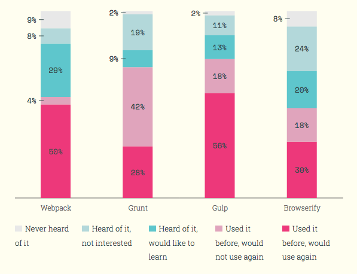

Web Development Automation
Wun Chiou
Office of Research
Information Systems
Code available at: https://github.com/wunc/gulp-presentation
Use arrow keys to navigate. Some slides have sub-slides accessible by using the down-arrow key.


Set up a new website:
- Download: frameworks & libraries
- Copy: Set up folder structure; copy files into place
- View: Load in browser
- Edit: make changes
- Compile: Sass/Less, ES6, etc.
- Test: Reload browser
Some web development tasks we can automate:
- Dependency installation
- File copying
- JS/CSS concatenation
- JS/CSS minifying
- Browser reloading
Types of Tools
Package Managers
Node Package Manager (NPM)
Bower
Module Bundlers
Webpack
Browserify
Task Runners
Grunt
Gulp


Let's get to it!
Installing the tools we need:
- NPM (installers for Windows, Mac, Linux)
- Gulp
npm install --global gulpnpm install --save-dev gulp
gulp.task('copy')
Download jQuery
npm install --save jquery
Copy it to our js folder
Make a gulpfile.js
var gulp = require('gulp');
gulp.task('copy', function() {
gulp.src('node_modules/jquery/dist/jquery.min.js')
.pipe(gulp.dest('js'));
});
Then, run the task with
gulp copyDone!
gulp.task('concatenate')
Download gulp-concat
npm install --save-dev gulp-concat
Copy it to our js folder
var gulp = require('gulp');
var concat = require('gulp-concat');
gulp.task('concatenate', function() {
gulp.src([
'lib/js/head.min.js',
'js/reveal.js',
'js/jquery.min.js',
'js/custom.js'
])
.pipe(concat('all.js'))
.pipe(gulp.dest('js'));
});
Then, run the task with
gulp concatenategulp.task('minify')
Download gulp-uglify
npm install --save-dev gulp-uglify
Define the task
var gulp = require('gulp');
var minify = require('gulp-uglify');
gulp.task('minify', function() {
gulp.src('js/all.js')
.pipe(minify())
.pipe(gulp.dest('js'));
});
Then, run the task with
gulp minifygulp.task('concatify')
Gulp is a "stream" task runner.
You can pipe multiple tasks in together.
var gulp = require('gulp');
var concat = require('gulp-concat');
var minify = require('gulp-uglify');
gulp.task('concatify', function() {
gulp.src([
'lib/js/head.min.js',
'js/reveal.js',
'js/jquery.min.js',
'js/custom.js'
])
.pipe(concat('all.js'))
.pipe(minify())
.pipe(gulp.dest('js'));
});
gulp concatify
Or, define a composite task:
gulp.task('concatify2', ['concatenate', 'minify']);Need more automatic!
(Make the droids do the work)

gulp.watch()
Watch for file changes and automatically run a task
Define the task
gulp.task('watch', function() {
gulp.watch(['js/**/*.js', '!js/all.js'], ['concatify']);
});
Then, run the task with
gulp watchReload & Notify
Download gulp-notify
npm install --save-dev gulp-notifyDownload browser-sync
npm install --save-dev browser-sync
Send a system notification when the task completes
var notify = require('gulp-notify');
gulp.task('concatify', function() {
gulp.src([
'lib/js/head.min.js',
'js/reveal.js',
'js/jquery.min.js',
'js/custom.js'
])
.pipe(concat('all.js'))
.pipe(minify())
.pipe(gulp.dest('js'))
.pipe(notify('JS Concatified!'));
});
Serve the site & auto-reload the browser when files change
gulp.task('browsersync', function() {
browserSync.init({
server: {baseDir: "./"}
});
});
gulp.task('serve', ['browsersync'], function () {
gulp.watch(['js/**/*.js', '!js/all.js'], ['concatify']);
gulp.watch([
'js/**/*.js', '!js/all.js',
'**/*.html', 'css/**/*.css',
]).on('change', browserSync.reload);
});
Some other web development tasks we can automate:
- CSS pre-processing (LESS, SASS)
- JS pre-processing (ES6, TypeScript)
- CSS vendor auto-prefixer (-webkit-, -moz-)
- Linting
- Image optimizing
- HTML template compilation
- Asset loading
Contact
wun@utdallas.edu